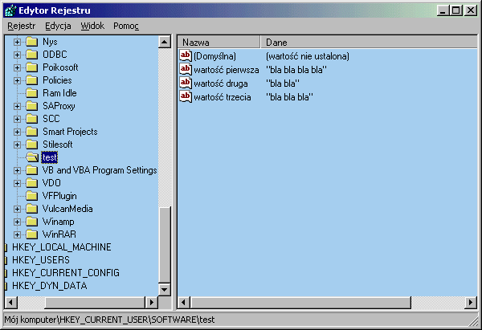

| << Tworzenie menu Spis Strona g³ówna Subclassing i superclassing >> |
W opisywanie, czym jest Rejestr i do czego s³u¿y nie bêdê siê tutaj bawiæ - wszystko to powinieneœ ju¿ dawno wiedzieæ, a jeœli nie wiesz, to pan Google chêtnie powie. W tym kursie zak³adam, ¿e odpowiedni¹ terminologiê znasz, a i Edytor Rejestru jest ci nieobcy. Dlatego te¿ bez zbêdnych ceregieli przechodzimy od razu do grzebania w tym najwiêkszym windowsowym œmietnisku ;-)
¯eby cokolwiek zrobiæ z danym kluczem Rejestru, musi on byæ najpierw otwarty. Trochê to dziwne, zw³aszcza dla kogoœ kto przyzwyczai³ siê, ¿e klucze to przyrz¹dy do otwierania czegoœ, a nie odwrotnie. Mniejsza jednak o szczegó³y. Mo¿na dokonaæ otwarcia klucza przy pomocy funkcji RegOpenKeyEx lub RegCreateKeyEx. £atwo siê domyœliæ, ¿e ta druga dodatkowo tworzy klucz, jeœli wczeœniej on nie istnia³. W obu przypadkach po otwarciu danego klucza uzyskujemy do niego uchwyt (typu HKEY). Pos³uguj¹c siê tym uchwytem mo¿emy z kluczem zrobiæ niemal wszystko, co nam potrzebne.
PrzejdŸmy teraz do praktyki. Odpalmy Edytor Rejestru (co najproœciej uczyniæ, wciskaj¹c Win+R, a nastêpnie wpisuj¹c 'regedit' i Enter). Otwieramy klucz HKEY_CURRENT_USER/Software, oczom naszym ukazuje siê mniej wiêcej taki widok:
Nastêpnie tworzymy w nim nowy klucz, np. o nazwie Test:
Tyle nam na razie wystarczy, spróbujemy teraz otworzyæ ten klucz z poziomu C++. Funkcja RegOpenKeyEx prezentuje siê nastêpuj¹co:
| Sk³adnia: RegOpenKeyEx(hKey, lpSubKey, ulOptions, samDesired, phkResult) | |
| Argument | Znaczenie |
|---|---|
| hKey | Uchwyt otwartego klucza |
| lpSubKey | Nazwa podklucza, którey otwieramy/tworzymy |
| ulOptions | Zarezerwowane - nie u¿ywaæ |
| samDesired | Maska bezpieczeñstwa dostêpu |
| nXSrc, nYSrc | Adres zmiennej na uchwyt klucza |
Warto wiedzieæ, ¿e istnieje te¿ funkcja RegOpenKey o znacznie prostszej sk³adni, jednak pochodzi ona jeszcze z czasów Windows 3.1 (gdzie, jak wiemy, Rejestru w znanej nam formie w³aœciwie nie by³o) i jej stosowanie nie jest zalecane.
Z powy¿szych argumentów najbardziej interesuje nas pierwszy. Jest to, jak widaæ w opisie, uchwyt do otwartego klucza. Wiêc jak to - móg³by ktoœ trzeŸwo zapytaæ - ¿eby otworzyæ klucz i uzyskaæ do niego uchwyt, musimy podaæ uchwyt do ju¿ otwartego klucza? Przecie¿ mo¿na w ten sposób w nieskoñczonoœæ... Na szczêœcie nikt nie wymaga od programistów, ¿eby próbowali goniæ w³asny ogon ;-). Okazuje siê bowiem, ¿e niektóre klucze s¹ otwarte przez ca³y czas, a uchwyty do nich s¹ sta³ymi: HKEY_CLASSES_ROOT, HKEY_CURRENT_USER, HKEY_LOCAL_MACHINE, HKEY_USERS (przy okazji dowiedzieliœmy siê, sk¹d wziê³y siê te nazwy w Regedicie, co pewnie niejednego nurtowa³o ;-)). Te cztery akurat s¹ wspólne dla wszystkich 32-bitowych Windowsów, natomiast w zale¿noœci od konkretnej platformy mog¹ wyst¹piæ tak¿e inne predefiniowane klucze (np. w Windows 98 s¹ jeszcze: HKEY_CURRENT_CONFIG i HKEY_DYN_DATA).
Tak wiêc, skoro mamy dane uchwyty kluczy pierwszego i najwy¿szego poziomu, to przy ich pomocy mo¿emy otworzyæ klucze drugiego poziomu, np. w naszym przypadku klucz Software. Uczyñmy to zatem:
|
HKEY hkSoftware; LONG result; result = RegOpenKeyEx(HKEY_CURRENT_USER, "software", 0, KEY_ALL_ACCESS, &hkSoftware); if(result == ERROR_SUCCESS) MessageBox(hwnd, "Uda³o siê otworzyæ klucz.", "Test", MB_ICONINFORMATION); |
Z parametrów funkcji RegOpenKeyEx niewiele jest do omawiania; w sumie rola ka¿dego z nich powinna byæ oczywista. Nieco mniej jasne wydaje siê u¿ycie sta³ej KEY_ALL_ACCESS - oznacza ona, ¿e ¿yczymy sobie pe³nego dostêpu do danego klucza. Mog³oby siê okazaæ, ¿e np. klucz jest zabezpieczony przed zapisem i wtedy otwarcie go z flag¹ KEY_ALL_ACCESS zapewne by siê nie powiod³o. W przeciwnym razie funkcja zwraca wartoœæ o doœæ schizofrenicznej nazwie ERROR_SUCCESS (jawny dowód na to, ¿e w systemie Windows sukces jest sytuacj¹ wyj¹tkow¹ ;-)), co oznacza, ¿e klucz jest ju¿ gotowy do u¿ycia.
W samym kluczu Software grzebaæ trochê nie wypada, gdy¿ jest on wspólny dla wszystkich aplikacji w systemie, w tym równie¿ dla samych aplikacji systemowych. Du¿o grzeczniej z naszej strony bêdzie, jeœli stworzymy sobie w³asny klucz do prywatnego u¿ytku. Tutaj znowu mamy do wyboru dwa warianty: prostszy RegCreateKey oraz doœæ skomplikowany RegCreateKeyEx. I znowu wybieramy ten drugi, gdy¿ jesteœmy akurat chorobliwie ambitni:
|
HKEY hkTest; LONG result; DWORD dwDisp; result = RegCreateKeyEx(hkSoftware, "test", 0, NULL, REG_OPTION_NON_VOLATILE, KEY_ALL_ACCESS, NULL, &hkTest, &dwDisp); if(result == ERROR_SUCCESS) if(dwDisp == REG_CREATED_NEW_KEY) MessageBox(hwnd, "Uda³o siê stworzyæ nowy klucz.", "Test", MB_ICONINFORMATION); else if(dwDisp == REG_OPENED_EXISTING_KEY) MessageBox(hwnd, "Uda³o siê otworzyæ istniej¹cy klucz.", "Test", MB_ICONINFORMATION); |
Trzy pierwsze argumenty funkcji s¹ identyczne jak w przypadku RegOpenKeyEx. Czwarty, lpClass, oznacza stringa z nazw¹ klasy klucza - mo¿emy tu daæ NULL. Kolejny argument to specjalne opcje tworzenia klucza - znów nie musimy siê tym specjalnie przejmowaæ, gdy¿ maj¹ one znaczenie (i to niewielkie) tylko w systemach klasy NT (co prawda teraz prawie wszyscy maj¹ takie systemy... no, nieistotne :-)). Daliœmy wiêc REG_OPTION_NON_VOLATILE tylko po to, ¿eby ³adnie wygl¹da³o ;-). Argument samDesired ju¿ znamy - to opcje dostêpu do nowo tworzonego klucza. Poniewa¿ to w³aœnie my tworzymy ten klucz, wiêc raczej chcemy mieæ do niego pe³ny dostêp, czyli dajemy KEY_ALL_ACCESS.
Pozosta³y trzy argumenty. Ten figuruj¹cy jako lpSecurityAttributes znowu bezczelnie olejemy, podaj¹c NULL. Wreszcie dochodzimy do wskaŸnika do zmiennej typu HKEY, która otrzyma uchwyt nowo utworzonego klucza oraz wskaŸnika do zmiennej typu DWORD, która otrzyma wartoœæ mówi¹c¹, czy klucz istnia³ przed wywo³aniem funkcji RegCreateKeyEx czy te¿ nie istnia³. Trzeba ci bowiem wiedzieæ, ¿e funkcja ta nie bêdzie protestowa³a w przypadku próby utworzenia ju¿ od wieków istniej¹cego klucza i równie¿ w takim przypadku, co mo¿e siê wydaæ zaskakuj¹ce, zwróci ERROR_SUCCESS. Efekt:
Z samych kluczy niewielki mamy po¿ytek, wiêc warto dowiedzieæ siê, jak ustawiamy konkretne wartoœci. Intuicja podpowiada, ¿e s³u¿y do tego funkcja RegSetValue - i faktycznie, istnieje taka. Jednak jest to kolejny relikt z czasów Windows 3.1 i do naszych celów funkcja ta jest praktycznie bezu¿yteczna, gdy¿ potrafi tylko ustawiaæ domyœln¹ wartoœæ klucza. Aby ustawiæ "zwyk³¹" wartoœæ, musimy skorzystaæ z nowszej wersji tej funkcji, czyli oczywiœcie RegSetValueEx:
|
char buf[20]; lstrcpy(buf, "Jakiœ tam tekst"); result = RegSetValueEx(hkTest, "MojaWartoœæ", 0, REG_SZ, (LPBYTE)buf, lstrlen(buf)+1); if(result == ERROR_SUCCESS) MessageBox(hwnd, "value is set.", "Test", MB_ICONINFORMATION); |
Sk³adnia naszej funkcji przypomina trochê poprzednie dwie, tyle ¿e tym razem zamiast nazwy podklucza podajemy nazwê wartoœci. Czwarty argument, czyli dwType, to typ wartoœci. Oto tabelka z najczêœciej stosowanymi typami:
| Sta³a | Znaczenie |
|---|---|
| REG_BINARY | Dowolne dane binarne |
| REG_DWORD | Liczba 32-bitowa bez znaku |
| REG_SZ | String |
| REG_MULTI_SZ | Tablica stringów |
W powy¿szym przyk³adzie u¿yliœmy sobie typu REG_SZ, czyli zwyk³ego stringa (najpowszechniejszy typ danych w Rejstrze). Aby umieœciæ stringa w Rejestrze, musieliœmy najpierw stworzyæ sobie bufor, skopiowaæ do niego tego stringa za pomoc¹ funkcji lstrcpy, a nastêpnie podaæ adres bufora funkcji RegSetValueEx. Funkcja ta oczekuje wskaŸnika tylko do pierwszego bajtu wartoœci, wiêc musieliœmy przekonwertowaæ adres bufora do typu LPBYTE (czyli BYTE*). Oczywiœcie jeœli funkcja oczekuje wskaŸnika typu LPBYTE, a wskazywany bufor jest zwykle d³u¿szy ni¿ 1 bajt, to nale¿y siê spodziewaæ, ¿e bêdziemy równie¿ musieli podaæ d³ugoœæ tego bufora. A poniewa¿ funkcja przyjmuje dane ró¿nych typów (nie tylko stringi), wiêc do tej d³ugoœci wlicza siê równie¿ znak zerowy na koñcu stringa, dlatego te¿ dodajemy jedynkê do d³ugoœci otrzymanej przy pomocy lstrlen.
Naturalnie, jeœli los siê na nas nie uwzi¹³, to po tych wszystkich zabiegach RegSetValueEx powinna nam zwróciæ ERROR_SUCCESS.
Odczytywanie wartoœci jest bardzo podobne do ich ustawiania, przynajmniej pod wzglêdem sk³adniowym. Tak wiêc wystarczy nieco zmodyfikowaæ poprzedni przyk³ad. Funkcja, któr¹ tu zaprzêgniemy do pracy, zowie siê RegQueryValueEx.
| Sk³adnia: RegQueryValueEx(hKey, lpValueName, lpReserved, lpType, lpData, lpcbData) | |
| Argument | Znaczenie |
|---|---|
| hKey | Uchwyt klucza |
| lpValueName | Nazwa wartoœci |
| lpReserved | Nie dotykaæ, grozi trwa³ym kalectwem |
| lpType | Adres bufora na typ wartoœci |
| lpData | Adres bufora na dane wartoœci |
| lpcbData | Rozmiar bufora na dane |
Poni¿szy przyk³ad pokazuje, jak pobraæ wartoœæ typu tekstowego do bufora i nastêpnie ukazaæ j¹ zaskoczonym oczêtom u¿ytkownika:
|
char buf[21]; DWORD dwBufSize = 20; result = RegQueryValueEx(hkTest, "MojaWartoϾ", NULL, REG_SZ, (LPBYTE)buf, &dwBufSize); if(result == ERROR_SUCCESS) { buf[20] = 0; MessageBox(hwnd, buf, "Test", MB_ICONINFORMATION); } |
Jedyna istotna dla nas ró¿nica jest taka, ¿e ostatni parametr funkcji RegQueryValueEx to tym razem wskaŸnik. Musimy do niego wpisaæ adres zadeklarowanej zmiennej, która bêdzie zawieraæ rozmiar bufora (i do której póŸniej powêdruje liczba bajtów skopiowanych do bufora przez funkcjê RegQueryValueEx). Powinna to byæ zmienna typu DWORD.
Jeœli RegQueryValueEx nie napotka po drodze ¿adnych przeszkód, to tradycyjnie zwróci ERROR_SUCCESS, ¿¹dana przez nas wartoœæ zostanie wpisana do bufora wskazywanego przez lpData, zaœ rozmiar tej wartoœci w bajtach zostanie wpisany do zmiennej wskazywanej przez lpcbData.
Przewidziano jeszcze jedno zastosowanie funkcji RegQueryValueEx, mianowicie samo sprawdzenie, czy dana wartoœæ istnieje, bez jej pobierania do bufora. Wówczas zamiast dwóch ostatnich wskaŸników podajemy NULL:
|
result = RegQueryValueEx(hkTest, "MojaWartoϾ", NULL, REG_NONE, NULL, NULL); if(result == ERROR_SUCCESS) MessageBox(hwnd, "WartoϾ istnieje ;-)", "Test", MB_ICONINFORMATION); |
W tym przypadku u¿ycie REG_NONE jako typ wartoœci ma znaczenie czysto kosmetyczne - robimy tak, ¿eby na pierwszy rzut oka by³o widaæ, ¿e de facto nie pobieramy ¿adnej wartoœci.
Usuwanie wartoœci nie jest spraw¹ skomplikowan¹, przynajmniej w porównaniu do wy¿ej opisanych funkcji. Zajmuje siê tym funkcja RegDeleteValue (tym razem bez Ex ;-)). Podajemy jej tylko uchwyt klucza i nazwê wartoœci do skasowania:
|
result = RegDeleteValue(hkTest, "MojaWartoœæ"); if(result == ERROR_SUCCESS) MessageBox(hwnd, "Z wartoœci pozosta³o tylko wspomnienie ", "Test", MB_ICONINFORMATION); |
Analogicznie usuwamy klucze. Podobnie jak w przypadku otwierania kluczy, tak¿e i tutaj nie mo¿emy siê odwo³aæ do klucza bezpoœrednio, lecz musimy podaæ uchwyt do klucza nadrzêdnego i nazwê podklucza, który chcemy usun¹æ. Tak wiêc nie mo¿na usun¹æ kluczy, które s¹ najwy¿ej w hierarchii, np. HKEY_CLASSES_ROOT (no i bardzo dobrze ;-)). Przyk³ad:
|
result = RegDeleteKey(hkSoftware, "test"); //usuñ klucz "test" if(result == ERROR_SUCCESS) MessageBox(hwnd, "Ulotny jest ¿ywot klucza... ;-)", "Test", MB_ICONINFORMATION); |
W rodzinie Windows 9x klucze usuwane s¹ kaskadowo (czyli poklucz wraz ze wszystkimi ewentualnymi pod-podkluczami). W rodzinie NT (czyli równie¿ w Windows 2000 oraz XP) mo¿na usuwaæ tylko puste klucze (tj. nie mog¹ one zawieraæ ¿adnych podkluczy). Za to w tym drugim przypadku mo¿esz skorzystaæ z funkcji SHDeleteKey, aby usuwaæ klucze rekurencyjnie (kaskadowo).
Odczytywanie wielu wartoœci pod rz¹d potrafi byæ deczko nu¿¹ce. Jeœli nie mamy pod rêk¹ jakiegoœ frajera, który by to za nas zakodzi³, mo¿emy sobie u³atwiæ ¿ycie dziêki funkcji RegEnumValue. Nie jest to mo¿e najprzyjaŸniejsza w u¿yciu funkcja WinAPI, ale i tak du¿o nam pomo¿e w sytuacjach podobnych do tej:

Funkcja RegEnumValue s³u¿y do pobieranie kolejnych wartoœci z danego podklucza (np. tych trzech powy¿ej). Poza tym u¿ywamy jej wtedy, gdy nie znamy nazw wartoœci, do których w³aœnie siê chcemy dobraæ ;-). Sk³adnia jest nastêpuj¹ca:
| Sk³adnia: RegEnumValue(hKey, dwIndex, lpValueName, lpcbValueName, lpReserved, lpType, lpData, lpcbData) | |
| Argument | Znaczenie |
|---|---|
| hKey | uchwyt klucza |
| dwIndex | Indeks wartoœci do odczytania |
| lpValueName | Bufor na nazwê wartoæci |
| lpcbValueName | Adres zmiennej z rozmiarem powyœzego bufora |
| lpReserved | Nie dotykaæ |
| lpType | Adres bufora na typ |
| lpData | Adres bufora na dane |
| lpcbData | Adres na rozmiar bufora na dane |
U¿ywamy tej funkcji w ten sposób, ¿e wywo³ujemy j¹ tak d³ugo, a¿ zwróci ERROR_NO_MORE_ITEMS. Za ka¿dym wywo³aniem powinniœmy te¿ zwiêkszaæ wartoœæ dwIndex (zaczynaj¹c od 0). Jeœli funkcja znajdzie w danym podkluczu wartoœæ o podanym przez nas indeksie, to umieœci jej nazwê w buforze wskazywanym przez lpValueName, typ w buforze wskazywanym przez lpType, natomiast wartoœæ w buforze wskazywanym przez lpData. Bufor na typ wartoœci musi byæ typu DWORD, natomiast pozosta³e dwa z wymienionych buforów powinne byæ odpowiednio du¿e, ¿eby pomieœciæ: nazwê i dane naszej wartoœci. Tylko jak uczyniæ je "odpowiednio du¿ymi", jeœli nie wiemy nic o wartoœci, któr¹ w³aœnie pobieramy?
Na szczêœcie informacja o maksymalnym rozmiarze tych buforów jest przechowywana przez system dla ka¿dego klucza osobno. Mo¿emy j¹ pobraæ za pomoc¹ RegQueryInfoKey. Liczba argumentów tej funkcji nie jest ma³a - "jedyne" 12. Wiêkszoœæ z nich to wskaŸniki do typu DWORD, ka¿dy z nich reprezentuje jakiœ atrybut klucza. Na szczêœcie te, które nas nie interesuj¹ (czyli wiêkszoœæ), mo¿na spokojnie ustawiæ na NULL. Chcemy tylko dwóch liczb - maksymalny rozmiar bufora na nazwê oraz bufora na wartoœæ. A ¿eby nas palce nie zabola³y od wpisywania tych NULL-ów, to pobierzemy sobie jeszcze ca³kowit¹ liczbê wartoœci w danym kluczu:
|
DWORD dwMaxName, dwMaxData, dwMaxIndex; result = RegQueryInfoKey(hkTest, NULL, NULL, NULL, NULL, NULL, NULL, &dwMaxIndex, &dwMaxName, &dwMaxData, NULL, NULL); if(result == ERROR_SUCCESS) MessageBox(hwnd, "Niesamowite, ale siê uda³o.", "Test", MB_ICONINFORMATION); |
W ten oto sposób otrzymaliœmy interesuj¹ce nas dane. Wiemy ju¿, ile jest wszystkich wartoœci w kluczu hkTest (ich liczba jest w zmiennej dwMaxIndex - znaj¹c tê liczbê nie musimy sprawdzaæ, czy RegEnumValue zwróci³a ERROR_NO_MORE_ITEMS), wiemy równie¿, jak du¿e powinne byæ bufory, które teraz u¿yjemy wraz z RegEnumValue... No w³aœnie, rozmiar buforów. Twórcy funkcji operuj¹cych na rejestrze najwyraŸniej nie mogli siê zdecydowaæ, czy w rozmiar ten wliczaæ znak zerowy na koñcu, czy te¿ nie. W rezultacie nie doœæ, ¿e ka¿da funkcja interpretuje to inaczej, to jeszcze taka np. RegEnumValue przyjmuje rozmiar wraz z zerem, ale zwraca bez niego. ¯eby ten ba³agan jako tako opanowaæ, musimy zwiêkszyæ o 1 wartoœci otrzymane dziêki RegQueryInfoKey:
|
++dwMaxName; ++dwMaxData; |
Drug¹ pu³apk¹ czyhaj¹c¹ na amatora rejestru jest fakt, ¿e RegEnumValue, jako siê rzek³o, coœ tam sobie zwraca oprócz kodu b³êdu. A tak dok³adniej - zwraca liczbê znaków, skopiowanych do podanych przez nas buforów, wpisuj¹c tê liczbê do zmiennych, których adresy podajemy (czyli u nas dwMaxName i dwMaxData). Poniewa¿ zaœ zmienne te przekazujemy jako argumenty wielokrotnie, wiêc przy ka¿dym wywo³aniu RegEnumValue musimy do nich wpisywaæ odpowiedni¹ wartoœæ od nowa. Dlatego te¿ bêdziemy potrzebowaæ dodatkowych dwóch zmiennych, w których zapamiêtamy pierwotne wartoœci dwMaxName i dwMaxData:
|
DWORD dwMaxName_ = dwMaxName, dwMaxData_ = dwMaxData; |
Teraz dopiero mo¿emy przyst¹piæ do pobierania w pêtli kolejnych wartoœci z rejestru:
|
char* ValueName = (char*)GlobalAlloc(GMEM_FIXED, dwMaxName); char* Data = (char*)GlobalAlloc(GMEM_FIXED, dwMaxData); DWORD ValueType; for(DWORD i=0; i<dwMaxIndex; ++i) { result = RegEnumValue(hkTest, i, ValueName, &dwMaxName, NULL, &ValueType, (LPBYTE)Data, &dwMaxData); if(result == ERROR_SUCCESS) { MessageBox(hwnd, ValueName, "Nazwa", MB_ICONINFORMATION); MessageBox(hwnd, Data, "WartoϾ", MB_ICONINFORMATION); } } GlobalFree(ValueName); GlobalFree(Data); |
Powy¿szy przyk³adzik po prostu wyœwietla kolejno wszystkie wartoœci z klucza hkTest. Zak³adamy w nim, ¿e wszystkie wartoœci s¹ typu REG_SZ (dla przyzwoitoœci powinniœmy to najpierw sprawdziæ - typ wartoœci kopiowany jest tutaj do ValueType - jednak¿e, jak wiadomo, autor tej strony s³ynie z lenistwa).
Zwróæ uwagê, ¿e zgodnie z tym, co w MSDN napisano, kolejnoœæ pobierania wartoœci z rejestru mo¿e byæ dowolna (chocia¿ najczêœciej pobierane s¹ w takiej kolejnoœci, w jakiej zosta³y utworzone).
| << Tworzenie menu Spis Strona g³ówna Subclassing i superclassing >> |